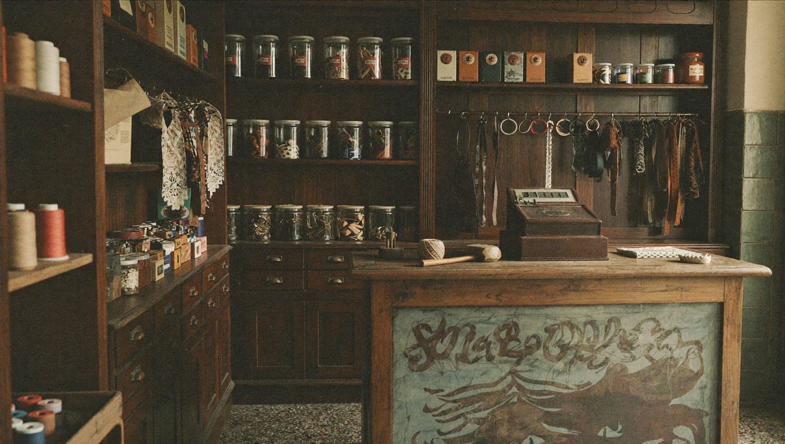

N.º 01
Hilo de algodón
1,80 €

Calle del Carmen, 12 · Lavapiés
Abrimos a las 9:30. Pasa y cuéntanos qué tienes que arreglar.
Lo más pedido de la semana.
N.º 01
1,80 €
N.º 02
4,50 €
N.º 03
2,95 €
N.º 04
3,20 €
N.º 05
12,90 €
N.º 06
6,50 €
64
años abiertos
4.000
referencias en el almacén
3
generaciones detrás del mostrador
1962
Carmen y Tomás abren una mercería de dos metros de fachada en la calle del Carmen.
1985
Se quedan con el local de al lado y llegan los tornillos: nace la ferretería.
2004
Lucía, la nieta, coge el relevo y empieza a hacer copias de llaves en el momento.
Hoy
Más de 4.000 referencias y la misma pregunta de siempre: «¿qué necesitas arreglar?».
Calle del Carmen, 12 · 28012 Madrid
Metro Lavapiés (línea 3)
Volver arriba (y bajar la persiana)Horario
Lunes a viernes: 9:30 a 14:00 y 17:00 a 20:30
Sábados: 10:00 a 14:00